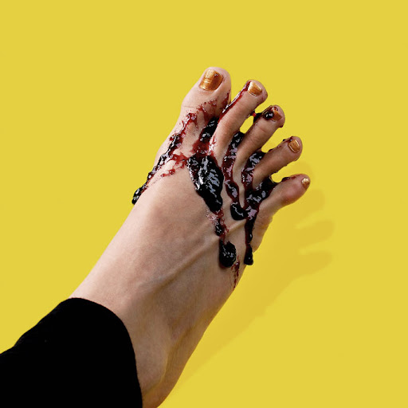

Toe Jam Jam

Description:
Recyle, Reuse, Reduce. DIY jam is my JAM! And what better way to live that lifestyle by reusing your toe jam for jam jam. Introducting Toe Jam Jam! TOE stands for Tangerine, Orange, & Elderberry, but we will be using our home-grown fruit found between our toes.
Ingredients:
- Buy a tangerine, an orange, and some elderberries
- 1T toe jam
- 1T pectin
- cooking utensils made for feet
Steps:
- Peel and juice fruit
- Add to a pot and bring to a boil, add pectin and stir for 30 Mins
- Source 1T of toe jam from household co-habitants (preferably while sleeping)
- Mix in toe jam with TOE jam
- Divide and jar for future uses
- Create pies and filled donuts for your work potluck
More Recipes